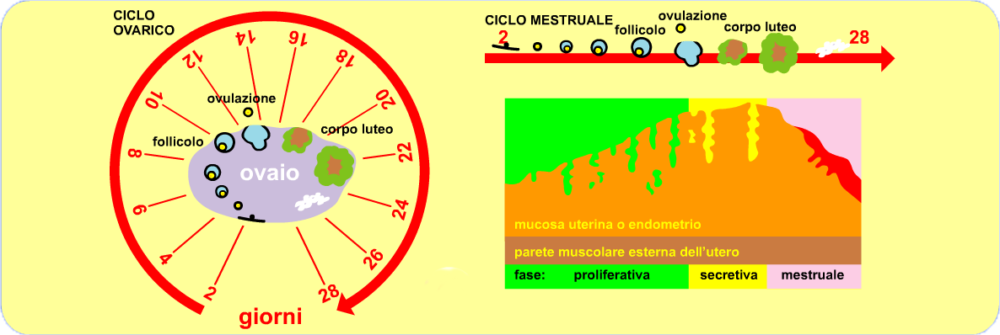

| HOMEPAGE | SISTEMI ED APPARATI | FASI DELLA VITA | ||
| HOMEPAGE | SISTEMI ED APPARATI | FASI DELLA VITA | ||
SESSUALITA'
Negli animali superiori l'apparato riproduttore è costituito dall'insieme degli organi e delle strutture che permettono la riproduzione sessuata, che consiste nella formazione di un nuovo individuo dall'unione di due Cellule sessuali (dette gameti), provenienti da ciascuno dei due genitori.
La sessualità è da considerarsi un vantaggio evolutivo, conquistato dagli organismi agli albori della vita sulla terra. Questo vantaggio (nato probabilmente solo per caso) è stato mantenuto da quasi tutti gli esseri viventi, poichè garantisce agli organismi la possibilità di generare discendenti diversi dai genitori e diversi tra loro, aumentando la variabilità del patrimonio genetico delle specie e delle popolazioni.
Questa variabilità è consentita dal processo di crossing over che si verifica durante la meiosi e che permette la ricombinazione del patrimonio genetico dei genitori.
Con l'aumento della variabilità aumenta anche le possibilità di una popolazione di organismi di superare la selezione naturale e di evolvere adattandosi in risposta ai cambiamenti dell'ambiente, così come spiegato dalle teorie evoluzionistiche darwiniste. Gli organi genitali che permettono la riproduzione sono diversi nei due sessi, e distinguiamo un apparato riproduttore maschile e un apparato riproduttore femminile. Le cellule sessuali (dette gameti) prodotte dai due sessi, si incontrano in seguito all'atto sessuale all'interno del corpo femminile e danno origine ad una nuova cellula, lo zigote, da cui deriverà un nuovo essere umano.
APPARATO RIPRODUTTORE FEMMINILE
L’apparato genitale femminile comprende gli organi che:
LE OVAIE
Le ovaie sono due organi pari con la forma e le dimensioni di una grossa mandorla (circa 3,5 cm di altezza, per 2 cm di larghezza e 1 cm di spessore) e sono situate nella cavità pelvica (sotto l'addome), ai lati dell'utero. Le ovaie svolgono due funzioni fondamentali:
L'ovaia è rivestita esternamente da un epitelio superficiale, fragile e sottile, ma dotato di un'elevata capacità rigenerativa. Sotto l'epitelio si trova uno strato di tessuto connettivo, che delimita il parenchima, la parte funzionale più interna. Quest'ultimo è formato da una zona corticale più esterna e da una midollare al centro. Nella zona corticale si trovano i follicoli, in vari stadi di maturazione, immersi in un tessuto connettivo di supporto che partecipa alle modificazioni dei follicoli durante il ciclo mestruale.
I follicoli sono costituiti da un ovocita circondato da uno strato di cellule follicolari. La zona midollare è costituita da tessuto connettivo lasso attraversato da numerosi vasi sanguigni, che formano una sorta di tessuto erettile che riempiendosi di sangue facilita lo scoppio dei follicoli.
LE TUBE UTERINE
Le tube uterine (o trombe di Falloppio od ovidotti), sono due organi pari, di forma tubolare e lunghi circa 12 cm. Collegano l'ovaia alla cavità dell'utero. Il tratto più vicino all'ovaia, l'infundibolo, ha la forma di un imbuto di circa 1 cm di diametro con il bordo sfrangiato, che raccoglie gli ovociti espulsi dall'ovaia in seguito all'ovulazione.
Nel tratto successivo che conduce alla cavità uterina, più sottile, avviene l'incontro tra gli spermatozoi e l'ovocita e quindi la fecondazione, con la formazione dello zigote, la prima cellula del nuovo individuo. Le tube svolgono queste funzioni:
L’UTERO
L'utero è l’organo della gravidanza e ha la funzione di accogliere l’ovocita fecondato e di consentirne lo sviluppo, fino al parto. È un organo impari e cavo, in cui sboccano (in alto) le tube uterine e che si apre (in basso) nella vagina.
È un organo che presenta la tipica struttura degli organi cavi, con una parete costituita da diversi strati che delimitano una cavità interna. Lo strato più interno riveste la cavità uterina ed è costituito dall'endometrio, una mucosa che si inspessisce durante il ciclo mestruale, preparando le condizioni necessarie affinché l'ovocita fecondato possa impiantarvisi. Lo strato intermedio, miometrio, è spesso ed è costituito da muscolatura liscia, le cui contrazioni determinano, al termine della gravidanza, il parto. Contiene vasi sanguigni e nervi.
Lo strato più esterno è costituito dal perimetrio, un strato di tessuto connettivo che si continua con il rivestimento della cavita pelvica. L'utero ha la una forma di una pera appiattita ed è posizionato nella cavità pelvica, tra la vescica e il retto.
Durante la gravidanza l'utero va incontro a profonde modificazioni, aumentando progressivamente le proprie dimensioni e il volume della cavità interna, che aumenta di circa 500-1.000 volte rispetto alle condizioni normali.
Le dimensioni variano durante l'età e in relazione al numero di figli. Nelle multipare (donne che hanno avuto più figli) l'utero presenta dimensioni maggiori rispetto alle nullipare (donne che non hanno avuto figli). Con la menopausa le sue dimensioni si riducono.
LA VAGINA
La vagina è un condotto muscolo-membranoso impari che rappresenta l’ultimo tratto delle vie genitali femminili. Si estende dall’utero alla vulva e ha una lunghezza media di circa 7-8 cm. La sua superficie interna non è perfettamente liscia, ma presenta rilievi e rughe.
E' posizionata tra la vescica e l'uretra anteriormente e il retto e l'ano posteriormente. La vagina è un organo estremamente estensibile: si dilata per permettere il passaggio al feto nel momento del parto e nello stesso tempo è anche un organo molto elastico tanto che, dopo la distensione, ritorna pressoché alla forma primitiva. È l’organo femminile dell'accoppiamento e riceve il pene e lo sperma durante il coito; permette il passaggio del flusso mestruale, delle secrezioni uterine e, al momento del parto, del feto e dei suoi annessi.
Nella donna vergine, l'apertura vaginale è normalmente coperta in parte dall'imene, una membrana di tessuto connettivo che si lacera con i primi atti sessuali. Queta sottile membrana può infrangersi anche facendo sport, andando in bicicletta, durante l'esame della pelvi oppure con l'uso di tamponi vaginali. D'altra parte il coito non ne determina necessariamente la lacerazione. Ne consegue che la deflorazione (la lacerazione dell'imene) non è necessariamente un indicatore della perdita della verginità.
LA VULVA
La vulva è costituita dall'insieme dei genitali femminili esterni, che formano una serie concentrica di strutture cutanee di protezione dell'apertura del canale vaginale.Apparato riproduttore maschile
L'apparato genitale maschile comprende gli organi che:
I TESTICOLI
I testicoli sono organi di forma ovale (all'incirca lunghi 5 cm e larghi 2,5 cm) e sono contenuti in una sacca, la borsa scrotale, situata alla base del pene. I testicoli svolgono due funzioni fondamentali:
Il testicolo è avvolto da delle tonache di tessuto connettivo, da cui si originano dei setti che si spingono verso l'interno separando dei lobuli, al cui interno si trovano i tubuli seminiferi. All'interno dei tubuli seminiferi avviene la produzione degli spermatozoi. In ogni tubulo seminifero si trovano, disposte a strati, le cellule germinali, che attraverso successive divisioni cellulari si trasformano in spermatozoi (processo di spermatogenesi). Nei tubuli seminiferi si trovano anche le cellule del Sertoli, che guidano le cellule germinali durante i diversi stadi della spermatogenesi. Gli spermatozoi maturi sono immessi nei tubuli seminiferi.
Le cellule germinali dei tubuli seminiferi, da cui si originano gli spermatozoi, sono sensibili alle alte temperature. Questo è il motivo per cui i testicoli sono appesi all'esterno del corpo, all'interno dello scroto, che garantisce una temperatura inferiore di circa 2°C a quella interna al corpo. I tubuli seminiferi confluiscono nella parte posteriore del testicolo in una complessa rete di tubuli, la rete testis, da cui partono altri sottili condotti, i dotti efferenti, che conducono all'epididimo.
L'epididimo è un sottile condotto, posizionato sul margine posteriore di ogni testicolo, in cui vengono immagazzinati gli spermatozoi. Dall'epididimo di ogni testicolo prende origine il dotto deferente, che esce dal sacco scrotale ed entra nella cavità addominale, dove conclude il suo percorso dietro la vescica, a livello della base della prostata, confluendo con la vescicola seminale a formare il dotto eiaculatore. Le vescicole seminali si trovano posteriormente alla prostata e producono una secrezione liquida (costituisce circa il 70% dello sperma) ricca di fruttosio, che rappresenta la fonte energetica per gli spermatozoi
I dotti eiaculatori, che si formano dall'unione dei dotti deferenti e delle vescicole seminali, attraversano la prostata e si aprono nell'uretra.
PROSTATA
La prostata è una ghiandola situata alla base della vescica ed è attraversata dall'uretra. Contribuisce alla formazione dello sperma (per circa il 20-30% del totale) secernendo diverse sostanze necessarie per la sopravvivenza degli spermatozoi.
Sotto la prostata, ai lati dell'uretra, si trovano le due ghiandole bulbo-uretrali, che producono un liquido denso, viscoso e trasparente che durante la fase di eccitazione sessuale fuoriesce dal pene (prima dello sperma).
L'uretra, nel maschio, è un condotto comune degli apparati escretore e riproduttore, in quanto permette il passaggio sia dell'urina che degli spermatozoi. Attraversa il pene per tutta la sua lunghezza e sfocia all'esterno all'apice del glande.
IL PENE
Il pene (o verga o asta virile) è l'organo maschile dell'atto sessuale o coito, possibile grazie alle sue capacità erettili. L'atto sessuale consiste, da un punto di vista prettamente fisiologico ed anatomico, nell'inserimento del pene eretto nella vagina.
Il corpo del pene è costituito da due corpi cavernosi e da un corpo spongioso, uniti insieme e circondati da tessuto connettivo, ed è rivestito da pelle. E' attraversato per tutta la sua lunghezza dall'uretra. Il corpo spongioso dell'uretra nella sua parte terminale si espande nel glande, l'estremità del pene, di diametro leggermente maggiore rispetto al corpo. Di colorito roseo (quasi violaceo nell'erezione), il glande presenta una superficie liscia e ha la forma di un cono a base molto larga e con un apice arrotondato, in corrispondenza del quale l'uretra sbocca all'esterno attraverso il meato urinario.
I corpi cavernosi sono caratterizzati da ampie cavità che, in seguito all'eccitazione sessuale, si riempiono di sangue, determinando l'erezione del pene. Con l'erezione il pene aumenta di dimensioni e diventa rigido, condizione necessaria per l'inserimento nella vagina durante l'atto sessuale.
Quando l'eccitazione sessuale raggiunge il culmine si verifica l'orgasmo, un complesso di reazioni neuro-muscolari involontarie e di breve durata che portano all'eiaculazione, ovvero l'emissione dello sperma. Al termine dell'eiaculazione l'erezione cessa, poiché il sangue defluisce dai corpi cavernosi che si "sgonfiano".
La pelle che riveste il pene è sottile, mobile ed espandibile per favorire l'erezione. La parte terminale della pelle del pene si ripiega su se stessa a formare il prepuzio, un lembo di pelle che ricopre il glande quando il pene è flaccido che lo lascia scoperto durante l'erezione. Il prepuzio è ancorato alla base del glande attraverso il frenulo, una sottile piega cutanea della faccia ventrale del prepuzio.
Quando il pene non è eretto, in genere pende mollemente verso il basso e misura mediamente 9 ± 4 centimetri di lunghezza e 3 centimetri di diametro. In erezione la lunghezza media è di 15 ± 3 cm, con un diametro di circa 4 cm.